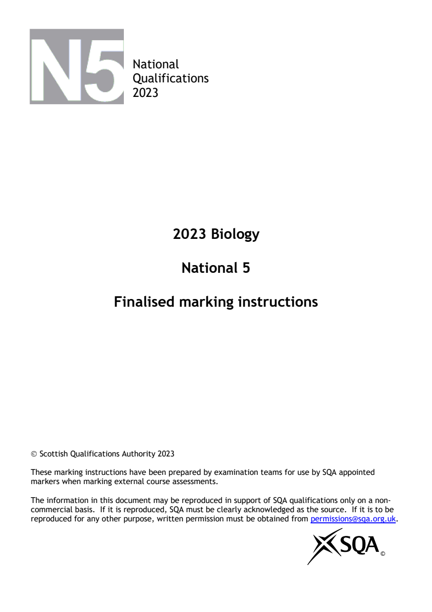
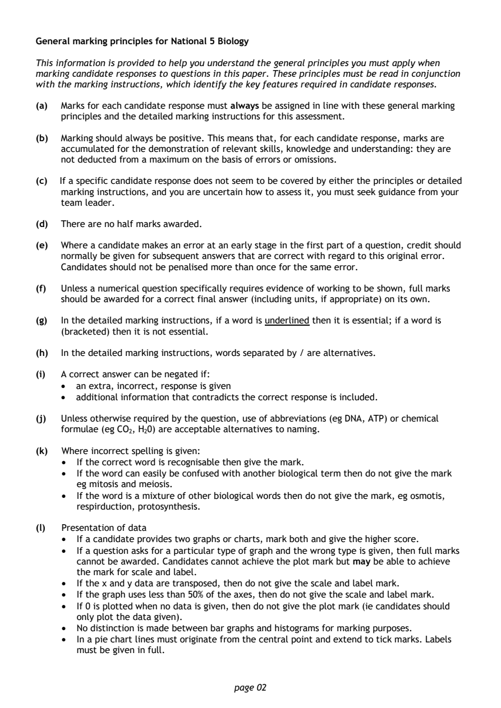
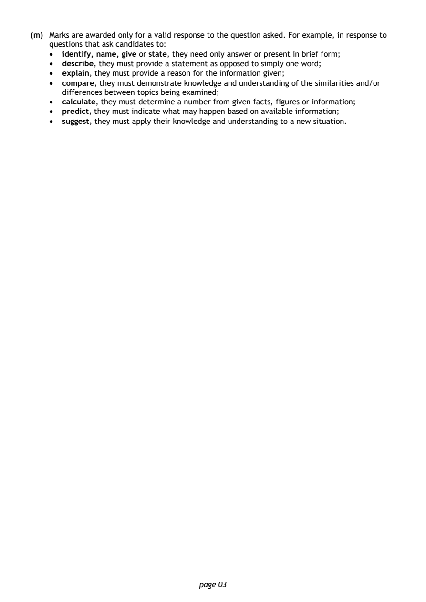
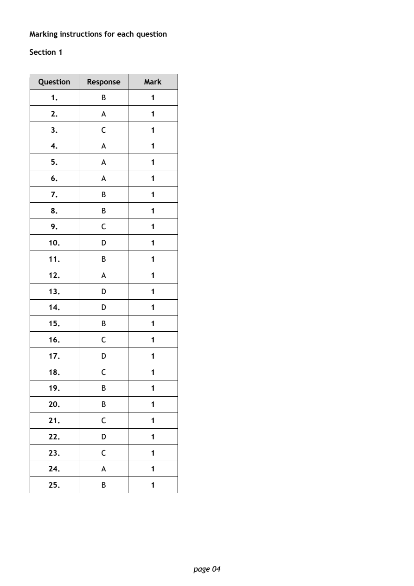
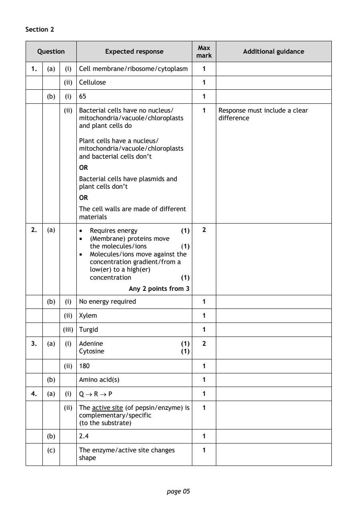
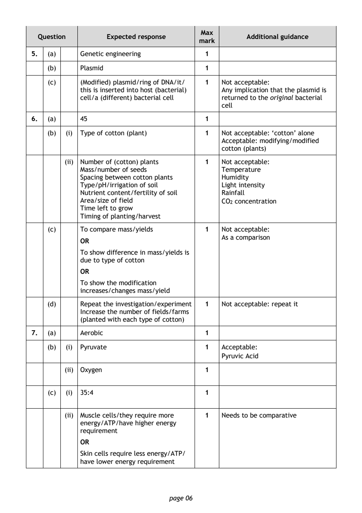
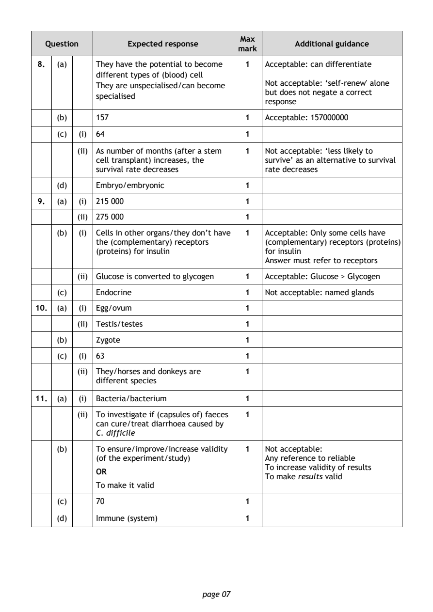
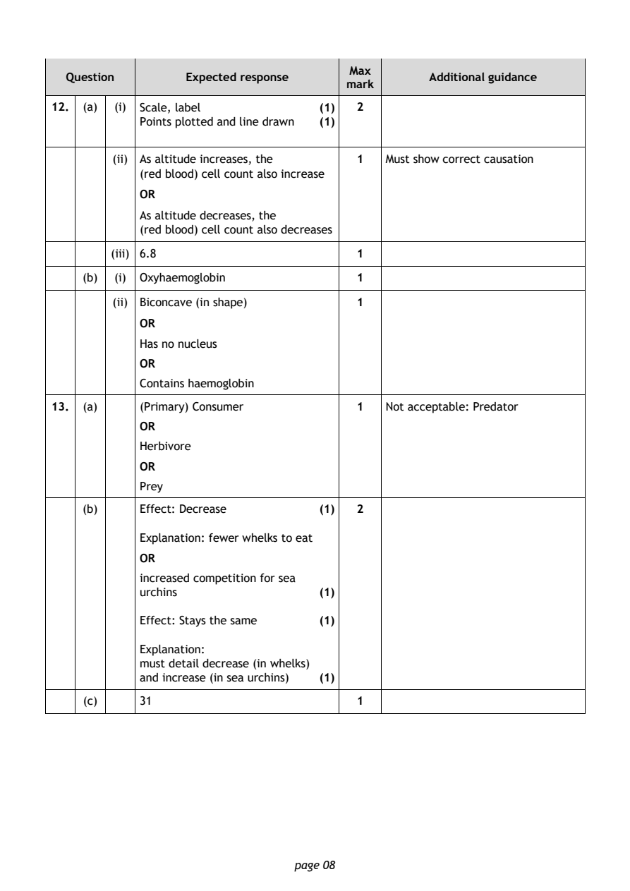
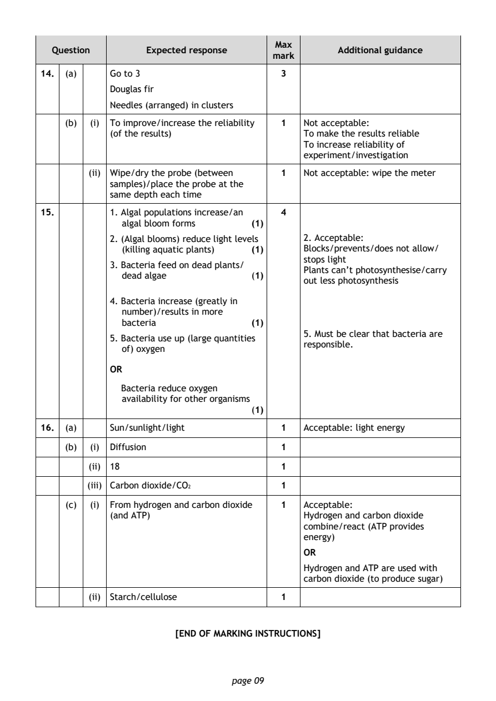

2023 National 5 Biology marking instructions
Source: Scottish Qualifications Authority (SQA) / Qualifications Scotland. This is a StemInteract HTML companion, not an official HTML edition. Selectable text is supplied alongside original page images. Use the images or original PDF for equations, powers, fractions, vector notation, tables and diagrams; text extraction cannot fully preserve mathematical layout.
Jump to a question
PDF page 1

Selectable page text
National
Qualifications
2023
2023 Biology
National 5
Finalised marking instructions
Scottish Qualifications Authority 2023
These marking instructions have been prepared by examination teams for use by SQA appointed
markers when marking external course assessments.
The information in this document may be reproduced in support of SQA qualifications only on a non-
commercial basis. If it is reproduced, SQA must be clearly acknowledged as the source. If it is to be
reproduced for any other purpose, written permission must be obtained from permissions@sqa.org.uk.
©PDF page 2

Selectable page text
General marking principles for National 5 Biology
This information is provided to help you understand the general principles you must apply when
marking candidate responses to questions in this paper. These principles must be read in conjunction
with the marking instructions, which identify the key features required in candidate responses.
(a) Marks for each candidate response must always be assigned in line with these general marking
principles and the detailed marking instructions for this assessment.
(b) Marking should always be positive. This means that, for each candidate response, marks are
accumulated for the demonstration of relevant skills, knowledge and understanding: they are
not deducted from a maximum on the basis of errors or omissions.
(c) If a specific candidate response does not seem to be covered by either the principles or detailed
marking instructions, and you are uncertain how to assess it, you must seek guidance from your
team leader.
(d) There are no half marks awarded.
(e) Where a candidate makes an error at an early stage in the first part of a question, credit should
normally be given for subsequent answers that are correct with regard to this original error.
Candidates should not be penalised more than once for the same error.
(f) Unless a numerical question specifically requires evidence of working to be shown, full marks
should be awarded for a correct final answer (including units, if appropriate) on its own.
(g) In the detailed marking instructions, if a word is underlined then it is essential; if a word is
(bracketed) then it is not essential.
(h) In the detailed marking instructions, words separated by / are alternatives.
(i) A correct answer can be negated if:
• an extra, incorrect, response is given
• additional information that contradicts the correct response is included.
(j) Unless otherwise required by the question, use of abbreviations (eg DNA, ATP) or chemical
formulae (eg CO , H 0) are acceptable alternatives to naming.
2 2
(k) Where incorrect spelling is given:
• If the correct word is recognisable then give the mark.
• If the word can easily be confused with another biological term then do not give the mark
eg mitosis and meiosis.
• If the word is a mixture of other biological words then do not give the mark, eg osmotis,
respirduction, protosynthesis.
(l) Presentation of data
• If a candidate provides two graphs or charts, mark both and give the higher score.
• If a question asks for a particular type of graph and the wrong type is given, then full marks
cannot be awarded. Candidates cannot achieve the plot mark but may be able to achieve
the mark for scale and label.
• If the x and y data are transposed, then do not give the scale and label mark.
• If the graph uses less than 50% of the axes, then do not give the scale and label mark.
• If 0 is plotted when no data is given, then do not give the plot mark (ie candidates should
only plot the data given).
• No distinction is made between bar graphs and histograms for marking purposes.
• In a pie chart lines must originate from the central point and extend to tick marks. Labels
must be given in full.
page 02PDF page 3

Selectable page text
(m) Marks are awarded only for a valid response to the question asked. For example, in response to
questions that ask candidates to:
• identify, name, give or state, they need only answer or present in brief form;
• describe, they must provide a statement as opposed to simply one word;
• explain, they must provide a reason for the information given;
• compare, they must demonstrate knowledge and understanding of the similarities and/or
differences between topics being examined;
• calculate, they must determine a number from given facts, figures or information;
• predict, they must indicate what may happen based on available information;
• suggest, they must apply their knowledge and understanding to a new situation.
page 03PDF page 4
Paper 1, Question 1Paper 1, Question 2Paper 1, Question 3Paper 1, Question 4Paper 1, Question 5Paper 1, Question 6Paper 1, Question 7Paper 1, Question 8Paper 1, Question 9Paper 1, Question 10Paper 1, Question 11Paper 1, Question 12Paper 1, Question 13Paper 1, Question 14Paper 1, Question 15Paper 1, Question 16Paper 1, Question 17Paper 1, Question 18Paper 1, Question 19Paper 1, Question 20Paper 1, Question 21Paper 1, Question 22Paper 1, Question 23Paper 1, Question 24Paper 1, Question 25
Selectable page text
Marking instructions for each question
Section 1
Question Response Mark
1. B 1
2. A 1
3. C 1
4. A 1
5. A 1
6. A 1
7. B 1
8. B 1
9. C 1
10. D 1
11. B 1
12. A 1
13. D 1
14. D 1
15. B 1
16. C 1
17. D 1
18. C 1
19. B 1
20. B 1
21. C 1
22. D 1
23. C 1
24. A 1
25. B 1
page 04PDF page 5
Paper 2, Question 1Paper 2, Question 2Paper 2, Question 3Paper 2, Question 4
Selectable page text
Section 2
Max
Question Expected response Additional guidance
mark
1. (a) (i) Cell membrane/ribosome/cytoplasm 1
(ii) Cellulose 1
(b) (i) 65 1
(ii) Bacterial cells have no nucleus/ 1 Response must include a clear
mitochondria/vacuole/chloroplasts difference
and plant cells do
Plant cells have a nucleus/
mitochondria/vacuole/chloroplasts
and bacterial cells don’t
OR
Bacterial cells have plasmids and
plant cells don’t
OR
The cell walls are made of different
materials
2. (a) • Requires energy (1) 2
• (Membrane) proteins move
the molecules/ions (1)
• Molecules/ions move against the
concentration gradient/from a
low(er) to a high(er)
concentration (1)
Any 2 points from 3
(b) (i) No energy required 1
(ii) Xylem 1
(iii) Turgid 1
3. (a) (i) Adenine (1) 2
Cytosine (1)
(ii) 180 1
(b) Amino acid(s) 1
4. (a) (i) Q → R → P 1
(ii) The active site (of pepsin/enzyme) is 1
complementary/specific
(to the substrate)
(b) 2.4 1
(c) The enzyme/active site changes 1
shape
page 05PDF page 6
Paper 2, Question 5Paper 2, Question 6Paper 2, Question 7
Selectable page text
Max
Question Expected response Additional guidance
mark
5. (a) Genetic engineering 1
(b) Plasmid 1
(c) (Modified) plasmid/ring of DNA/it/ 1 Not acceptable:
this is inserted into host (bacterial) Any implication that the plasmid is
cell/a (different) bacterial cell returned to the original bacterial
cell
6. (a) 45 1
(b) (i) Type of cotton (plant) 1 Not acceptable: ‘cotton’ alone
Acceptable: modifying/modified
cotton (plants)
(ii) Number of (cotton) plants 1 Not acceptable:
Mass/number of seeds Temperature
Spacing between cotton plants Humidity
Type/pH/irrigation of soil Light intensity
Nutrient content/fertility of soil Rainfall
Area/size of field CO concentration
2
Time left to grow
Timing of planting/harvest
(c) To compare mass/yields 1 Not acceptable:
As a comparison
OR
To show difference in mass/yields is
due to type of cotton
OR
To show the modification
increases/changes mass/yield
(d) Repeat the investigation/experiment 1 Not acceptable: repeat it
Increase the number of fields/farms
(planted with each type of cotton)
7. (a) Aerobic 1
(b) (i) Pyruvate 1 Acceptable:
Pyruvic Acid
(ii) Oxygen 1
(c) (i) 35:4 1
(ii) Muscle cells/they require more 1 Needs to be comparative
energy/ATP/have higher energy
requirement
OR
Skin cells require less energy/ATP/
have lower energy requirement
page 06PDF page 7
Paper 2, Question 8Paper 2, Question 9Paper 2, Question 10Paper 2, Question 11
Selectable page text
Max
Question Expected response Additional guidance
mark
8. (a) They have the potential to become 1 Acceptable: can differentiate
different types of (blood) cell
Not acceptable: ‘self-renew' alone
They are unspecialised/can become
but does not negate a correct
specialised
response
(b) 157 1 Acceptable: 157000000
(c) (i) 64 1
(ii) As number of months (after a stem 1 Not acceptable: ‘less likely to
cell transplant) increases, the survive’ as an alternative to survival
survival rate decreases rate decreases
(d) Embryo/embryonic 1
9. (a) (i) 215 000 1
(ii) 275 000 1
(b) (i) Cells in other organs/they don’t have 1 Acceptable: Only some cells have
the (complementary) receptors (complementary) receptors (proteins)
(proteins) for insulin for insulin
Answer must refer to receptors
(ii) Glucose is converted to glycogen 1 Acceptable: Glucose > Glycogen
(c) Endocrine 1 Not acceptable: named glands
10. (a) (i) Egg/ovum 1
(ii) Testis/testes 1
(b) Zygote 1
(c) (i) 63 1
(ii) They/horses and donkeys are 1
different species
11. (a) (i) Bacteria/bacterium 1
(ii) To investigate if (capsules of) faeces 1
can cure/treat diarrhoea caused by
C. difficile
(b) To ensure/improve/increase validity 1 Not acceptable:
(of the experiment/study) Any reference to reliable
To increase validity of results
OR
To make results valid
To make it valid
(c) 70 1
(d) Immune (system) 1
page 07PDF page 8
Paper 2, Question 12Paper 2, Question 13
Selectable page text
Max
Question Expected response Additional guidance
mark
12. (a) (i) Scale, label (1) 2
Points plotted and line drawn (1)
(ii) As altitude increases, the 1 Must show correct causation
(red blood) cell count also increase
OR
As altitude decreases, the
(red blood) cell count also decreases
(iii) 6.8 1
(b) (i) Oxyhaemoglobin 1
(ii) Biconcave (in shape) 1
OR
Has no nucleus
OR
Contains haemoglobin
13. (a) (Primary) Consumer 1 Not acceptable: Predator
OR
Herbivore
OR
Prey
(b) Effect: Decrease (1) 2
Explanation: fewer whelks to eat
OR
increased competition for sea
urchins (1)
Effect: Stays the same (1)
Explanation:
must detail decrease (in whelks)
and increase (in sea urchins) (1)
(c) 31 1
page 08PDF page 9
Paper 2, Question 14Paper 2, Question 15Paper 2, Question 16
Selectable page text
Max
Question Expected response Additional guidance
mark
14. (a) Go to 3 3
Douglas fir
Needles (arranged) in clusters
(b) (i) To improve/increase the reliability 1 Not acceptable:
(of the results) To make the results reliable
To increase reliability of
experiment/investigation
(ii) Wipe/dry the probe (between 1 Not acceptable: wipe the meter
samples)/place the probe at the
same depth each time
15. 1. Algal populations increase/an 4
algal bloom forms (1)
2. (Algal blooms) reduce light levels 2. Acceptable:
(killing aquatic plants) (1) Blocks/prevents/does not allow/
stops light
3. Bacteria feed on dead plants/
Plants can’t photosynthesise/carry
dead algae (1)
out less photosynthesis
4. Bacteria increase (greatly in
number)/results in more
bacteria (1)
5. Must be clear that bacteria are
5. Bacteria use up (large quantities
responsible.
of) oxygen
OR
Bacteria reduce oxygen
availability for other organisms
(1)
16. (a) Sun/sunlight/light 1 Acceptable: light energy
(b) (i) Diffusion 1
(ii) 18 1
(iii) Carbon dioxide/CO 1
2
(c) (i) From hydrogen and carbon dioxide 1 Acceptable:
(and ATP) Hydrogen and carbon dioxide
combine/react (ATP provides
energy)
OR
Hydrogen and ATP are used with
carbon dioxide (to produce sugar)
(ii) Starch/cellulose 1
[END OF MARKING INSTRUCTIONS]
page 09